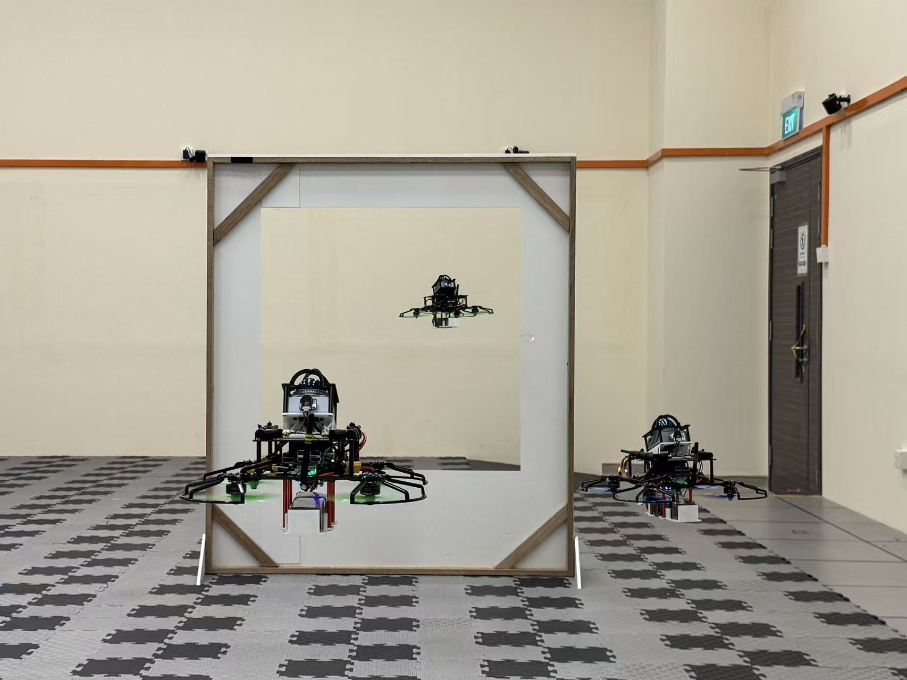
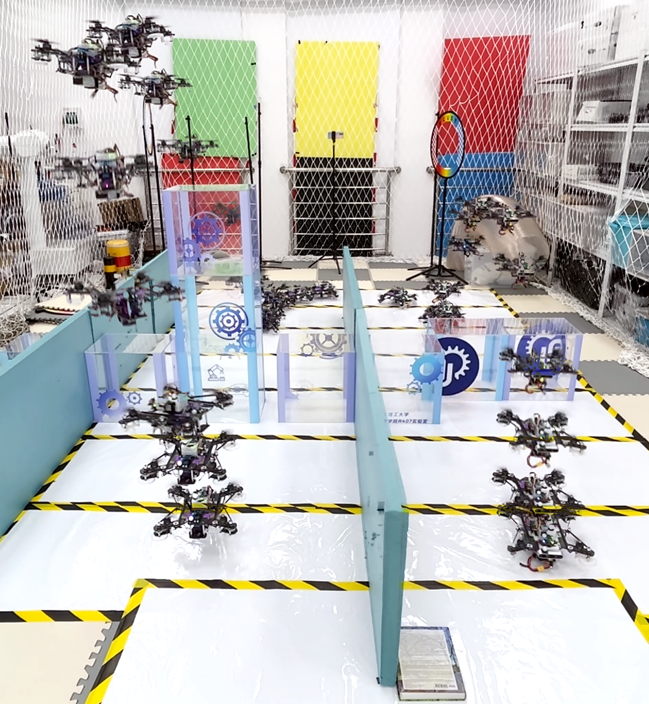

Dongnan Hu 胡栋楠

Welcome! I am Dongnan Hu. I am currently a Research Assistant at National University of Singapore (NUS), supervised by Prof. Guillaume Sartoretti. I obtained my M.Eng degree in Control Engineering from East China University of Science and Technology (ECUST) in June 2024, supervised by Prof. Yang Tang (IEEE Fellow). I received my B.Eng. in Mechanical Engineering from Nanjing Tech University.
My research interests include autonomous navigation, motion planning and control, and mobile robotics.
News
- My Bilibili video series on PX4 flight control principles has received over 100,000 views in total.
- Started as a research assistant at Marmot Lab, NUS.
- My Bilibili account has reached 1,000 followers.
- Received my M.Eng. degree in Control Engineering from ECUST.
- Our work "Trajectory Planning and Tracking of Hybrid Flying-Crawling Quadrotors" was accepted by IECON 2024.
Selected Publications
Projects
Deep Reinforcement Learning based Multi-UAV Target Search in Low Rise Urban Environments
September, 2025 - May, 2026- Assembled a UAV and integrated an onboard computer, flight controller, and LiDAR.
- Built a ROS 2-based UAV autonomous navigation system: integrating reinforcement learning (exploration and goal generation) -> trajectory planning (planning trajectories to the goal) -> PX4-based controller (trajectory tracking).
- A swarm composed of three UAVs was constructed to perform autonomous multi-UAV exploration.

Trajectory Planning and Tracking of Hybrid Flying-Crawling Quadrotors
June, 2022 - November, 2023- Constrained ground-motion yaw angles to keep hybrid trajectories feasible for both crawling and flying modes.
- Developed transition-aware tracking with junction skipping and replanning to handle model-switching delays between terrestrial and aerial phases.

Motion planning and control of a morphing quadrotor in restricted scenarios
February, 2023 - April, 2023- Structural design and assembly of a morphing UAV.
- Autonomous formation reconfiguration for narrow environments

Quadrotor Human-Robot Interactive Navigation and Formation System Based on Onboard Vision
October, 2022 - December, 2022- Quadrotor UAV platform development and integration.
- Multi-UAV formation control.
- Gesture-based human-machine interaction.

Timeline
2025 - Present
2021 - 2024
M.Eng in Control Engineering
East China University of Science and Technology
Supervised by Prof. Yang Tang
2018 - 2020
B.Eng. in Mechanical Engineering
Nanjing Tech University
Contact
Email: dongnanhu6556@gmail.com
Location: Shanghai, China